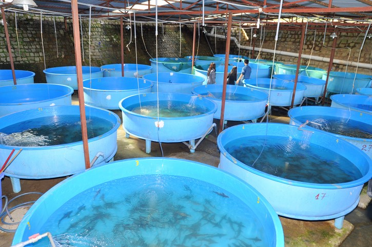
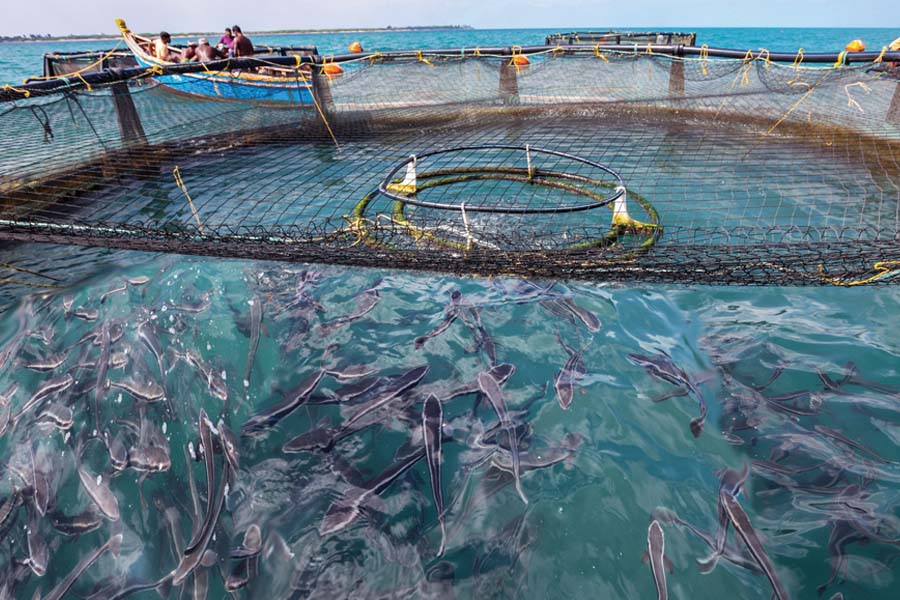
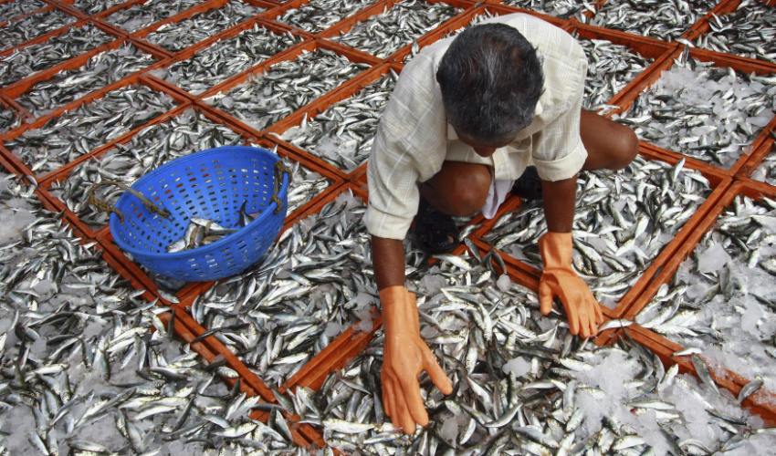
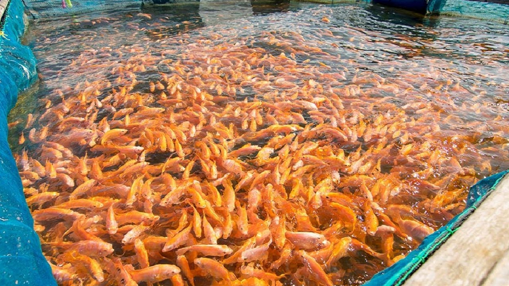

🐬 फिश फार्मिंगद्वारे शेतकरी आपले उत्पन्न कसे दुप्पट करू शकतात
अन्न उत्पादन क्षेत्रात मत्स्यपालनाला महत्त्वपूर्ण स्थान आहे. 2000 च्या सुरूवातीच्या आधीच्या तीन दशकांत, मत्स्यपालन उद्योगाच्या वाढीने इतर सर्व पशुखाद्य क्षेत्रांना मागे टाकले. मांस उत्पादन क्षेत्राच्या अनुभवी वार्षिक दराच्या वार्षिक वाढीचा दर २. 8 टक्क्यांपेक्षा जास्त होता.
ग्लोबल एक्वाकल्चर अलायन्सच्या मते, २० fish० पर्यंत अन्न माशांच्या पुरवठ्यातील अंदाजे %२% मत्स्यपालनातून येतील. याचा अर्थ मत्स्यपालन आणि मत्स्यपालन क्षेत्राला निपुणता देणा industries्या उद्योगांसाठी जगभरात अधिक वाढ होते.

🐳 ग्लोबल स्नॅपशॉट फिश फार्मिंग
माशांच्या शेतात जंगलात पकडल्या जाणा fish्या माशांच्या प्रमाणात होणारी घट कमी होण्यासाठी व्यवहार्य तोडगा देण्यात आला आहे. जगभरातील जागतिक मासळीच्या वापरासाठी मासे पालन करणे महत्त्वाचे आहे.
चीन जगातील बहुतेक शेतीत मासे आणि समुद्री खाद्य पुरवठा 62 टक्के करतो, तर 26% चीन बाहेरील आशियामध्ये तयार केला जातो. युरोप आणि अमेरिकेचा मागोवा शेतीच्या जागतिक समुद्री खाद्य उत्पादनात अगदी 4.5..% इतका आहे.
🥫 खाद्य आणि पोषण
निरोगी वाढीच्या दरासाठी आणि चांगल्या आरोग्याची देखभाल करण्यासाठी शेतीच्या माशांना आवश्यक पौष्टिक आहार आवश्यक असतात. सामान्यत: फिश फीड सामान्य कुत्र्याच्या अन्नासारखे दिसणार्या गोळ्याच्या स्वरूपात पुरविले जाते.
मत्स्यपालन बाजारपेठ अधिकाधिक स्पर्धात्मक होत असल्याने, मासे उत्पादक प्रतिस्पर्ध्यांपासून वेगळे होण्यासाठी मार्ग शोधत आहेत.

खाद्य उत्पादकांसाठी त्यांच्या मत्स्यपालन उत्पादनांची ऑफर वाढविण्याचा उत्तम मार्ग म्हणजे उच्च-गुणवत्तेच्या itiveडिटिव्ह्ज आणि पूरक आहारांचा वापर. योग्य addडिटिव्ह प्रक्रियेची क्षमता वाढविण्याबरोबरच फीडचे परिरक्षण गुण सुधारू शकते. उत्पादक वाया जाणा or्या फीडच्या परिणामी संभाव्य उत्पन्नात गमावतात जे उत्पादन प्रक्रियेत खराब होते किंवा पेलेटिंग दरम्यान खंडित होते. फीड कंडीशनर आणि गोळी बांधणारे प्रभावी उपाय देतात.
🦈 विशिष्ट प्रजाती संबोधित करणे

टिळपिया ही मासे पालन व्यवसायात सर्वात लोकप्रिय प्रजाती आहे. हे का हे पाहणे कठिण नाही. जगातील 80 हून अधिक राष्ट्रे शेती-पिकवलेल्या तिलपियाची निर्मिती करतात. तिलपियाचे तीन सर्वात सामान्य प्रकार म्हणजे नाईल, निळे आणि मोझांबिक टिलापिया. केवळ २०१० मध्ये, ila 475 दशलक्ष पौंड टिळपियाचे सेवन केले गेले.
टिळपिया लोकप्रियतेत अग्रेसर आहे, तर ते फक्त लोकप्रिय शेतात मासे देणारी प्रजाती आहेत.
10 सर्वात सामान्य शेती केलेल्या माशांच्या प्रजाती:
1. कॅटफिश
2. टिळपिया
3. तांबूस पिवळट रंगाचा
4. कार्प
5 ब्लूफिल आणि सनफिश
6. स्टर्जन
7 वॉलले
8. यलो पर्च
9. संकरित धारीदार बास
10 ब्रूक, ब्राउन आणि इंद्रधनुष्य ट्राउट
कार्पची लोकप्रियता काही प्रमाणात आशियाई बाजारात मर्यादित आहे, तर कॅटफिश प्रामुख्याने उत्तर अमेरिकन बाजारात लोकप्रिय आहे.
जास्तीत जास्त गुणवत्तेवर लक्ष केंद्रित करणारे मत्स्य उत्पादक जास्त किंमतीचे स्टॉक तयार करण्यास सक्षम असतील. निरोगी मत्स्य आहारामध्ये आवश्यक असलेल्या सर्व पोषक आहारांचा पुरवठा करणार्या मत्स्यपालन फीड हे शेतकर्यांनी पहिले पाऊल उचलले पाहिजे. वाढीसाठी आणि कार्यक्षमतेसाठी इष्टतम वातावरणाचे नियमन आणि देखरेखीसाठी जवळून अनुसरण केले पाहिजे.
🐟 फिश शेती व्यवसायाचे फायदे
मुळात अन्न उत्पादन करण्याच्या उद्देशाने मत्स्यपालनाद्वारे टाक्या व तलावांमध्ये व्यावसायिकपणे मासे पिकविले जात आहेत. व्यावसायिक मासे पालन जगात एक आकर्षक व्यवसाय उपक्रम म्हणून यापूर्वीच स्थापना केली आहे. जसे आपल्याला माहित आहे की मासे अन्न आणि प्रथिनांचा एक महान स्त्रोत आहे, म्हणूनच लोकसंख्या वाढीच्या अनुषंगाने मासे आणि मासे संबंधित उत्पादनांची मागणी आणि किंमत देखील वेगाने वाढत आहे.
जरी आपण कोणत्याही देशात मासे पालन व्यवसाय करू शकता परंतु किनारपट्टीवरील देश या व्यवसायासाठी अधिक योग्य आहेत. मासे पालन व्यवसाय हा भारतासह जगातील बर्याच लोकांच्या कमाईचा एकमेव मार्ग आहे.

🎀 फायदे
व्यावसायिक मासे पालन व्यवसाय सुरू करण्याचे बरेच फायदे आहेत आणि खाली काही मुख्य फायदे आहेत.
1.मागणीनुसार, व्यावसायिक मासे पालन व्यवसायात माशाचा मोठ्या प्रमाणात पुरवठा होऊ शकतो. जंगलातून मासे पकडणे नेहमीच ग्राहकांची मागणी पूर्ण करू शकत नाही म्हणून अशा परिस्थितीत व्यावसायिक मासे पालन ही मागणी पूर्ण करू शकेल.
2. मासे विक्रीसाठी किंवा विक्रीसाठी तयार होईपर्यंत त्यांना टाक्यांमध्ये सहज वाढवता येतात आणि त्यांना जंगली माशांच्या विस्तृत वापराची आवश्यकता नसते. म्हणून व्यावसायिक मासे पालन नैसर्गिक परिसंस्था जपण्यास मदत करते.
3. वन्य माश्यांशी तुलना केल्यास शेतीत वाढवलेल्या काही माशांच्या प्रजाती अधिक निरोगी आणि स्वादिष्ट असतात. माशांना सामान्यतः व्यावसायिक माशांच्या शेतात विविध प्रकारचे पोषक आणि प्रथिने समृद्ध पदार्थ किंवा गोळ्या दिल्या जातात. म्हणून शेतातील मासे वन्य माशापेक्षा स्वस्थ होतात.
4. खरंच जगभरात विविध प्रकारच्या माशांच्या प्रजाती आहेत. तर आपण आपल्या मासे पालन व्यवसायासाठी आपल्या इच्छित प्रजाती निवडू शकता.
5. आम्हाला हे देखील माहित आहे की जगभरात मासे खाद्य म्हणून लोकप्रिय आहे आणि अशा प्रकारे आपल्यासाठी आधीच स्थापित फिश मार्केट उपलब्ध आहे. आणि त्यांना कोठे विक्री करावी याबद्दल आपल्याला खरोखर चिंता करण्याची गरज नाही.
6. आपण आपला मासे पालन व्यवसाय मोठ्या किंवा लहान उत्पादनात सुरू करू शकता; हे सर्व आपल्याकडे उपलब्ध असलेल्या संसाधनांवर अवलंबून आहे.
7. आणि हा व्यवसाय सुरू करण्यासाठी आपल्याकडे पुरेसा निधी किंवा पैसा नसल्यास आपण बँक कर्जासाठी देखील अर्ज करू शकता.
8. आपण आपल्या दैनंदिन कौटुंबिक पौष्टिक गरजा टाक्या किंवा तलावांमध्ये छोट्या-प्रमाणात मासे पालनद्वारे देखील पूर्ण करू शकता.
🐬 सर्वात शेवटचा परंतु किमान मासे पालन व्यवसाय हा एक उत्तम रोजगार नाही. हे नमूद करणे महत्वाचे आहे की जगभरातील 1 अब्जाहून अधिक लोक माशांवर अवलंबून असतात जे त्यांचे प्राथमिक प्रथिने स्त्रोत आहेत. आणि त्यापैकी बरेच लोक थेट किंवा अप्रत्यक्षपणे मासे पालन किंवा मासे उत्पादनांच्या व्यवसायात गुंतलेले आहेत. यामुळे, मासे पालन या लोकांसाठी चांगले उत्पन्न आणि रोजगाराचे स्रोत निर्माण करते. शिवाय, सध्या जागतिक मासळी निर्यात व्यवसाय इतर कोणत्याही खाद्यपदार्थाच्या तुलनेत दरवर्षी अधिक पैसे कमवत आहे.
📞 संपर्क साधा
वैशिष्ट्यीकृत पोस्ट

कृषी सुविधांमध्ये संपूर्ण होल्डिंगपासून ते आस्थापनांपर्यंतच्या सुविधांचा समावेश आहे.

खरंच, शतकानुशतकाच्या सर्वात मोठ्या शेतीच्या विस्ताराच्या शेवटी, शेतक of्याची कोंडी ही एक मोठी समस्या बनली होती.

शेतात, आयओटी शेतातील डिव्हाइसवर सर्व प्रकारचे डेटा दूरस्थपणे मोजण्याची आणि वास्तविक वेळेत ही माहिती शेतक to्यास पुरविण्याची परवानगी देते.

शेती हा भारताच्या अर्थव्यवस्थेचा उल्लेखनीय भाग आहे, कारण त्यामध्ये संपूर्ण जीडीपीच्या 18 टक्के वाढ होते.

आपल्याला जे करायला आवडते ते करा आणि आपल्याला स्मित करा.